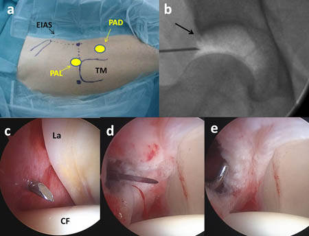

ARTROSCOPIA DE CADERA
La artroscopia de cadera es una técnica quirúrgica mínimamente invasiva que consiste en estudiar o tratar lesiones de la articulación de la cadera introduciendo, a través de mínimas incisiones en la piel, una pequeña videocámara junto con el instrumental quirúrgico.
Esta técnica permite a los cirujanos visualizar el interior de la articulación y realizar procedimientos quirúrgicos precisos sin necesidad de realizar una cirugía abierta. La maestría en esta técnica en fundamental en la Cirugía Preservadora de Cadera, que es el nuevo paradigma en el tratamiento de la patología de cadera. Su intención es tratar precozmente las lesiones de cadera, antes de que estas produzcan un llamativo desgaste articular, evitando o posponiendo así la necesidad de una prótesis de cadera.
Respecto a la cirugía abierta de cadera, la artroscopia tiene las ventajas de ser mucho menos agresiva, lo que permite mejores resultados con menos complicaciones.
Indicaciones de la artroscopia de cadera
Diagnóstico y tratamiento del choque femoroacetabular
Diagnóstico y tratamiento de lesiones del labrum
Diagnóstico y tratamiento de otras deformidades de la articulación>/li>
Tratamiento artroscópico de lesiones del cartílago
Toma de muestra de cartílago para implantes de condrocitos
Implante de condrocitos en situaciones muy concretas
Tratamiento de Artritis sépticas
Procedimiento de artroscopia de cadera
La artroscopia de cadera suele realizarse con anestesia epidural o general, y dura unos 90 minutos aproximadamente, aunque la duración dependerá del tipo de lesión y del tratamiento aplicado.
Durante el procedimiento, se realiza una tracción de la pierna, de modo que el espacio de la articulación se distiende al máximo para facilitar el procedimiento. El cirujano realizará un a pequeña incisión del tamaño de un ojar para introducir el artroscopio; y otras pequeñas incisiones para introducir el instrumental quirúrgico.
Tras la artroscopia de cadera, el paciente encamado recuperándose de la intervención, con analgesia, y suele irse de alta al día siguiente, horas después de la cirugía.
El procedimiento artroscópico produce, en general, poco dolor postoperatorio, y se suele controlar bien tras el alta con medicación oral.
El tiempo de recuperación posterior y el programa de rehabilitación suele depender del tipo de cirugía que se haya efectuado mediante la artroscopia. En las artroscopias de cadera puramente diagnósticas el paciente puede marcharse a casa en horas e iniciar el apoyo en 24 horas.
Resultados de la artroscopia de cadera
La Artroscopia de Cadera ha demostrado ser igual de efectiva que la cirugía abierta tradicional en el tratamiento del Choque Femoroacetabular. Sin embargo, los pacientes tratados mediante artroscopia de cadera presentan una calidad de vida significativamente mejor que los pacientes tratados con cirugía tradicional de cadera.
En general, en las indicaciones de la Artroscopia de cadera, hay evidencia científica de distinto grado que señala que esta técnica es efectiva, produce menos complicaciones, menos dolor post-operatorio y una recuperación más temprana.
El éxito de la cirugía artroscópica de cadera está claramente relacionado con la experiencia del cirujano en la realización del procedimiento, por lo que los resultados son mejores en las unidades traumatológicas especializadas en artroscopia de cadera
